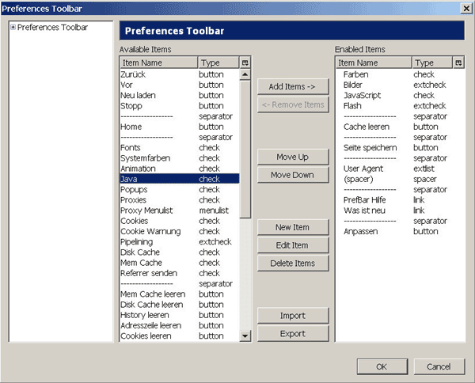

Avoid data trails on the internet: PrefBar
How to configure PrefBar so that it will enhance your anonymity
Websites could offer content that will reveal your identity even when surfing anonymously with JonDo. Examples for such contents are JavaScript and Java.
PrefBar may be used to block such content. PrefBar is a plugin suitable for Firefox and Mozilla Seamonkey.
Installation of PrefBar
- Open your browser
- Open PrefBar's Homepage
Go to this site.
- Install PrefBar
Klick on the link for one of both installers. Doing that, a popup or similar message may appear asking for your permission to perform an installation or just informing you that installation has been blocked.
In both cases you should be able to decide that installation should be proceeded. To do so in Firefox, you may have to allow installations from this site explicitly.
After installation you will probably have to restart your browser.
Settings for PrefBar
- Open your Browser
Now you should see a new toolbar:

- Settings
Click on Anpassen. Now you should see this window:

Choose the element Java from available elements and click on Add items ->. Repeat this step for the element Referrer senden. Now click on OK and you should see new checkboxes for Java and Referrer senden in your toolbar.
You may of course add or remove items, depending on what you consider useful.
- Block content
The following rule applies to these checkboxes: If they are checked, this content will not be blocked. So if you want to block JavaScript, you will have to uncheck it's checkbox.
It is highly recommended to uncheck Java, JavaScript and Referrer senden..
Hint: Use F8 to toggle PrefBar hidden or shown.
Test: Test these settings for anonymity using this guide.